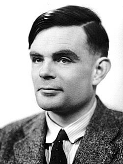

About Alan Turing
Alan Turing (1912–1954) was a British mathematician, logician, and computer scientist. His ideas about computation established important foundations for modern computing. During World War II, he contributed to the work that decoded German encrypted messages. Turing also proposed the Turing Test, a way to discuss whether a machine can demonstrate intelligent behaviour.
Important events
- Born in London in 1912.
- Studied mathematics at King's College, Cambridge.
- Published a paper describing the Turing machine in 1936.
- Worked at Bletchley Park during World War II.
- Received a posthumous royal pardon in 2013.
Key contributions
- The concept of the Turing machine
- Foundations of computer science
- Cryptanalysis of the Enigma code
- The Turing Test for artificial intelligence